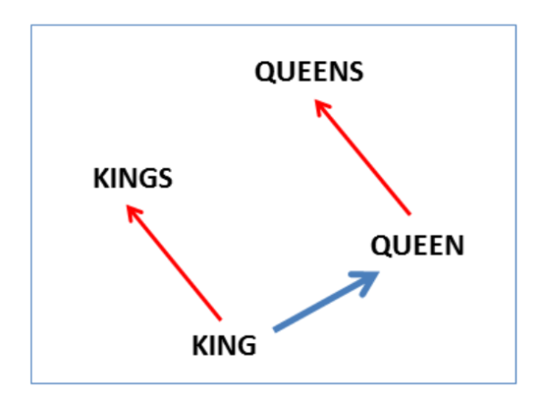
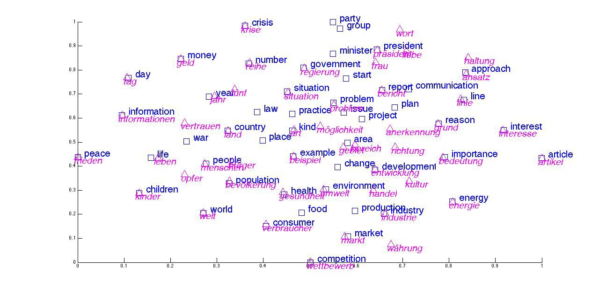
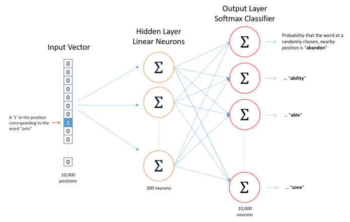
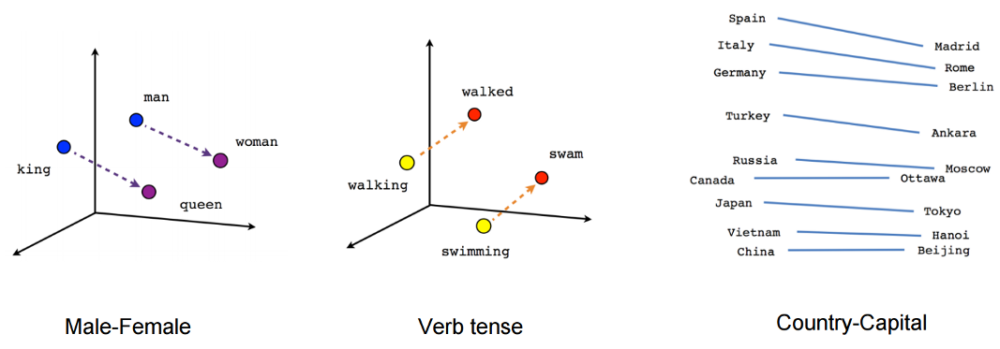

Word2vec
Word Embedding
Created by 马明
Content
- What is Word Embedding
- Word2Vec in detail
- GloVe
What is Word Embedding
- The Big Idea: Turn text into numbers
- Map words or phrases from a vocabulary to a corresponding vector of real numbers
- Compare to bag of words, create a vector representation with a much lower dimensional space.
Recall Bag Of Words
Bag of Words

Word Embedding
2 key advantages
- Dimensionality Reduction: Efficient
- Contextual Similarity: Expressive
Simple visualization
2 ways to implement word2vec
- CBOW (Continuous Bag-Of-Words)
- Skip-Gram
CBOW vs Skip-Gram


Word2vec architect
- Single hidden layer
- Just to learn the weights of the hidden layer which is the "word vector"

Why Named Word2Vec
Speedy O(1) lookup with word2vec
Output Layer

Contextual Similarity Visuliazation
Negative Sampling
Question:
With 300 features and 10,000 words, how many weights exist in the hidden layers and output layers each?
The problem was resolved by two approaches
- Subsampling frequent words to decrease the number of training examples.
- Modifying the optimization objective with a technique called “Negative Sampling”, which causes each training sample to update only a small percentage of the model’s weights.
Both two not only reduced the compute burden of the training process, but also improved the quality of their resulting word vectors as well.
Subsampling rate
- $w_i$ is the word, and $z(w_i)$ is the fraction.
- $P(w_i)$ is the probability of keeping the word:
$P(w_i) = (\sqrt{\frac{z(w_i)}{0.001}} + 1) \cdot \frac{0.001}{z(w_i)}$

-
$P(w_i)=1.0$ (100% chance of being kept) when $z(w_i)<=0.0026$.
-
$P(w_i)=0.5$ (50% chance of being kept) when $z(w_i)<=0.00746$.
-
$P(w_i)=0.033$ (3.3% chance of being kept) when $z(w_i)<=1.0$.
-
Skip-gram neural network has a tremendous number of weights, all of which would be updated slightly by every one of our billions of training samples!
-
Negative sampling addresses this by having each training sample only modify a small percentage of the weights, rather than all of them.
Note: Alternative approach is Hierachical Softmax
How to do it?
Randomly select just a small number of “negative” words (let’s say 5) to update the weights.
5~20 words for small datasets; 2~5 words for large
-
Also still update the weights for our “positive” word
-
Only 0.06% of the 3M weights in the output layer!
The “negative samples” are selected using a “unigram distribution”
$P(w_i) = \frac{ {f(w_i)}^{3/4} }{\sum_{j=0}^{n}\left( {f(w_j)}^{3/4} \right) }$
GloVe
Global Vectors for word representation
Combines the benefits of the word2vec skip-gram model when it comes to word analogy tasks, with the benefits of matrix factorization methods that can exploit global statistical information
GloVe VS Word2Vec
Word2Vec
- Predictive Model
Improve their predictive ability of Loss
- Capture co-corrence one window at atime
- Shallow-window methods learn word representations from local context windows
GloVe
- Counting-Based Model
Doing dimensionality reduction on the co-occurrence counts matrix
- Capture the counts of overall statistics how often it appears
- Matrix factorization methods use low-rank approximations to decompose large matrices capturing statistical information about a corpus
Matrix factorization

-
Co-occurrence Probability
$P_{ij}=P(j|i)=\frac{X_{ij}}{X_i}=\frac{X_{ij}}{\sum_k X_{ik}}$
$X_{ij}$ = number of times word $j$ occurs in the context of word $i$.
-
Naive Model: $F(w_i,w_j,\tilde{w_k})=\frac{P_{ik}}{P_{jk}}$
-
Vector Model: $F(w_i-w_j,\tilde{w_k})=\frac{P_{ik}}{P_{jk}}$
Example from original paper
Suppose we wish to study the relationship between two words, $i = ice$ and $j = steam$
We’ll do this by examining the co-occurrence probabilities of these words with various “probe” words $k$.

The ratio between co-occurrence probabilities helps filter out noise points
Deep in
we’re attempting to design a function which maps word vectors to ratios of co-occurrence probabilities
Scale-Input model: $F((w_i-w_j)^T\tilde{w_k})=\frac{P_{ik}}{P_{jk}}$
$F((w_i-w_j)^T\tilde{w_k})=\frac{F(w_i^T\tilde{w_k})}{F(w_j^T\tilde{w_k})}$
$F$ to be exponential function, and $w_i^T\tilde{w_k}=log P_{ik}=log(\frac{X_{ik}}{X_i}) = log X_{ik}-log X_i$
“exchange” symmetry of our function: $w_i^T\tilde{w_k}+b_i+\tilde{b_k}=log X_{ik}$
Finally
$$J=\sum_{i,j=1}^Vf(X_{ij})(w_i^T\tilde{w_k}+b_i+\tilde{b_k}-log X_{ik})^2$$

Weighting function $f$ with $\alpha=3/4$
Summary
The training objective of GloVe is to learn word vectors such that their dot product equals the logarithm of the words’ probability of co-occurrence

Markdown support
Write content using inline or external Markdown. Instructions and more info available in the readme.
<section data-markdown>
## Markdown support
Write content using inline or external Markdown.
Instructions and more info available in the [readme](https://github.com/hakimel/reveal.js#markdown).
</section>
Fragments
Hit the next arrow...
... to step through ...
... a fragmented slide.
Fragment Styles
There's different types of fragments, like:
grow
shrink
fade-out
fade-up (also down, left and right!)
current-visible
Highlight red blue green
Transition Styles
You can select from different transitions, like:
None -
Fade -
Slide -
Convex -
Concave -
Zoom
Themes
reveal.js comes with a few themes built in:
Black (default) -
White -
League -
Sky -
Beige -
Simple
Serif -
Blood -
Night -
Moon -
Solarized
Slide Backgrounds
Set data-background="#dddddd" on a slide to change the background color. All CSS color formats are supported.
Image Backgrounds
<section data-background="image.png">Tiled Backgrounds
<section data-background="image.png" data-background-repeat="repeat" data-background-size="100px">Video Backgrounds
<section data-background-video="video.mp4,video.webm">... and GIFs!
Background Transitions
Different background transitions are available via the backgroundTransition option. This one's called "zoom".
Reveal.configure({ backgroundTransition: 'zoom' })Background Transitions
You can override background transitions per-slide.
<section data-background-transition="zoom">Pretty Code
function linkify( selector ) {
if( supports3DTransforms ) {
var nodes = document.querySelectorAll( selector );
for( var i = 0, len = nodes.length; i < len; i++ ) {
var node = nodes[i];
if( !node.className ) {
node.className += ' roll';
}
}
}
}Code syntax highlighting courtesy of highlight.js.
Marvelous List
- No order here
- Or here
- Or here
- Or here
Fantastic Ordered List
- One is smaller than...
- Two is smaller than...
- Three!
Tabular Tables
| Item | Value | Quantity |
|---|---|---|
| Apples | $1 | 7 |
| Lemonade | $2 | 18 |
| Bread | $3 | 2 |
Clever Quotes
These guys come in two forms, inline: The nice thing about standards is that there are so many to choose from
and block:
“For years there has been a theory that millions of monkeys typing at random on millions of typewriters would reproduce the entire works of Shakespeare. The Internet has proven this theory to be untrue.”
Intergalactic Interconnections
You can link between slides internally, like this.
Speaker View
There's a speaker view. It includes a timer, preview of the upcoming slide as well as your speaker notes.
Press the S key to try it out.
Export to PDF
Presentations can be exported to PDF, here's an example:
Global State
Set data-state="something" on a slide and "something"
will be added as a class to the document element when the slide is open. This lets you
apply broader style changes, like switching the page background.
State Events
Additionally custom events can be triggered on a per slide basis by binding to the data-state name.
Reveal.addEventListener( 'customevent', function() {
console.log( '"customevent" has fired' );
} );Take a Moment
Press B or . on your keyboard to pause the presentation. This is helpful when you're on stage and want to take distracting slides off the screen.
Much more
- Right-to-left support
- Extensive JavaScript API
- Auto-progression
- Parallax backgrounds
- Custom keyboard bindings
THE END